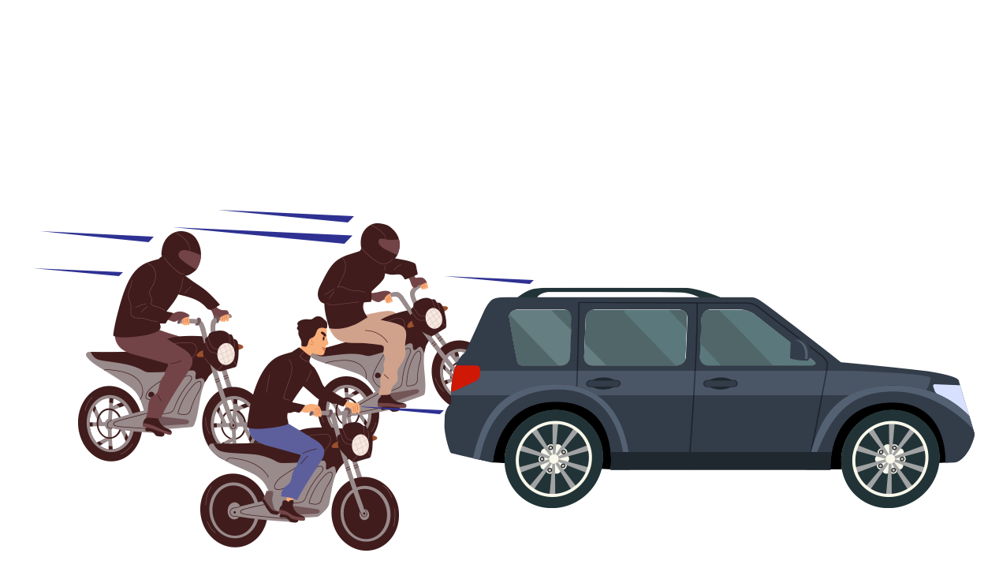

KRONOLOGI
Ihwalnya, mobil yang dikendarai HM itu dikejar oleh sekelompok orang. Aksi pengejaran itu pun beredar luas di media sosial dengan bernarasikan bahwa HM telah melakukan pencurian. Dalam video tersebut, terdengar suara pria yang meneriaki HM sebagai maling. Teriakan itu ternyata mengundang amarah massa lainnya.